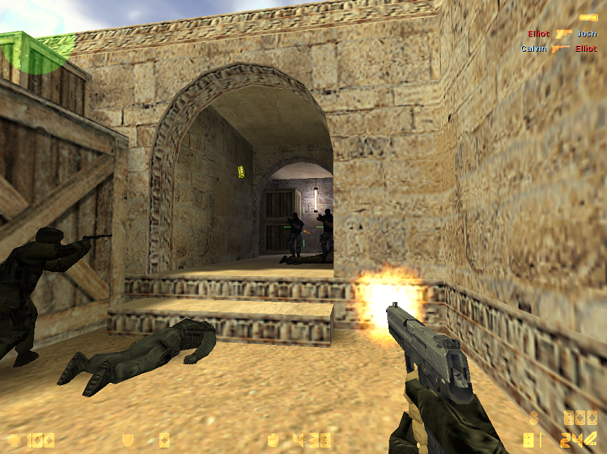

Гравці в Counter-Strike поділяються на протиборчі команди терористів (T) і спецпризначенців (контртерористів, CT). Керуючи одним з бійців, гравець повинен забезпечити перемогу своєї команди, головним чином знищуючи опонентів упродовж кількох раундів. Сутички відбуваються на місцевостях, званих картами. Кожен боєць володіє запасом здоров'я, початковою зброєю і коштами. За кошти можливо придбати іншу зброю, броню чи оснащення на кшталт приладу нічного бачення або щита. Гравцеві надаються відомості про стан здоров'я, броні, час до кінця раунду, кількість союзників, боєзапас і кошти. Також на екрані наводить радар, що показує розташування бійців, і відомості про те, хто кого вбив і з якої зброї. На початку гравець обирає карту, команду і одного з чотирьох її бійців. Класи бійців косметичні — вони відрізняються тільки зовнішнім виглядом, але вигляд може сприяти маскуванню, залежно від карти. Команди починають сутичку, перебуваючи на «базі», навколо якої існує «зона покупок». Перебуваючи в ній, гравець може придбати за кошти корисні речі на свій розсуд. Раунд триває поки не буде досягнуто поставленої мети, або одна з команд не знищить іншу. В разі загибелі свого бійця, гравець продовжує спостерігати за сутичкою до кінця раунду. Коли раунд завершується, команди отримують кошти (переможці більшу суму) і в повному складі знову опиняються на своїх «базах» (респавняться).
